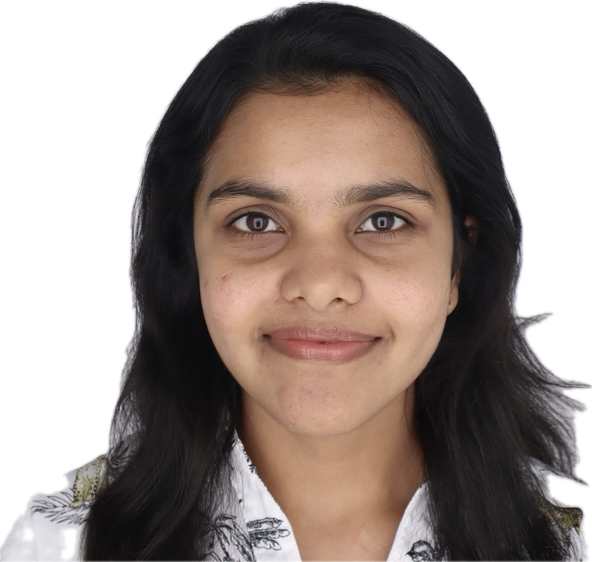

Mathematics PhD Candidate | Data-driven Modeling | Bayesian Inference | Data Analysis
I am a 5th year PhD candidate in Mathematics at Purdue University, West Lafayette. I am working in Mathematical Biology under the supervision of Prof. Alexandria Volkening. My work focuses on developing and analyzing computational models to understand complex biological systems, with applications in, fern tissue development, zebrafish skin pattern formation and vascular network analysis.
Developing a vertex-based mathematical model to understand how the spatial and temporal dynamics in cell division and growth affect the fern gametophyte formation.
Using pair correlation functions as summary statistics and Bayesian inference methods to estimate parameters in an agent-based model of zebrafish skin pattern formation. This work helps identify informative developmental time points, mutants, and cell types for future experimental design and model refinement.
Applied computational and topological data analysis techniques to analyze vascular network structures and study how aging and biological conditions affect network organization.
SIAM Great Lakes Annual Conference, Purdue University, West Lafayette (Contributed talk) September 19-20, 2026
SIAM Conference on the Life Sciences, Cleveland, OH (Invited speaker) June 6-9, 2026
Association for Women in Mathematics Purdue Chapter Symposium (Invited speaker) March 28, 2026
Student Computational and Applied Mathematics Seminar, Purdue University, West Lafayette March 13, 2026
SIAM Conference for Graduate Students, Purdue University, West Lafayette April 19, 2025
Association for Women in Mathematics Purdue Chapter Symposium (Invited speaker) April 5, 2025
Email: akonpola@purdue.edu
LinkedIn: in/asinikonpola
Website: akonpola.github.io